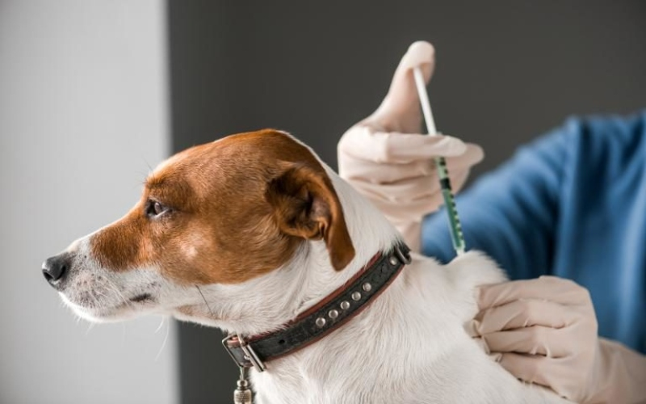
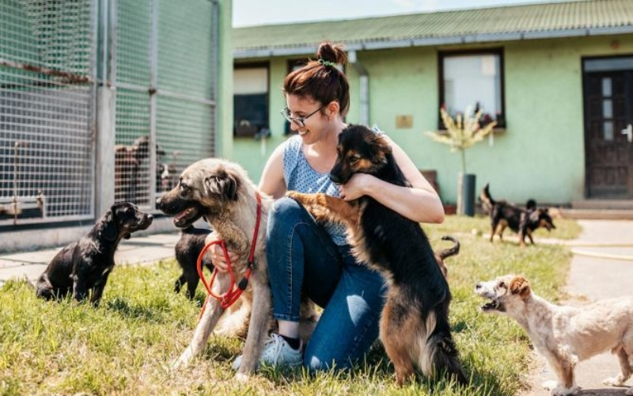
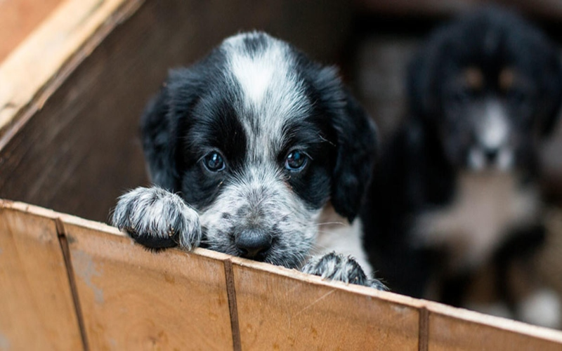

Todos los perros que rescatamos reciben la vacunación correspondiente. De esta forma evitamos que se contagien de una gran cantidad de enfermedades graves, algunas mortales para ellos y otras que son transmitidas a las personas.
Botón

Darle un hogar a un perro es un acto de amor que brinda mucha alegría. Desafortunadamente es común que algunos propietarios que compran un cachorro de forma impulsiva decidan abandonarlo, sucede cuando se dan cuenta del compromiso implica.
Botón

Un perro es tu amigo, tu compañero. ¿Querés lo mejor para él? Tu compromiso será cuidarlo y compartir juntos tiempo de calidad. Si querés dar el gran paso te invitamos a que los conozcas.
Botón